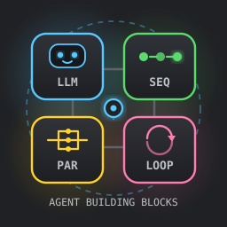
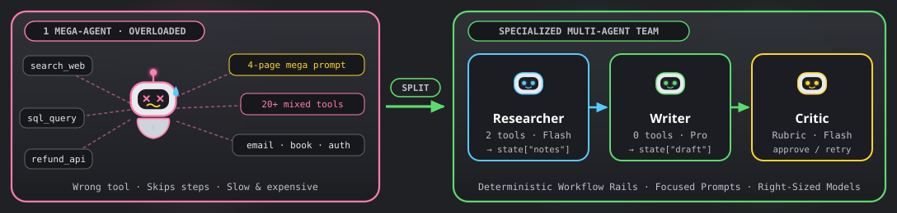
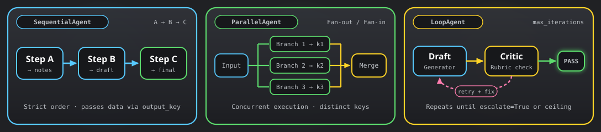
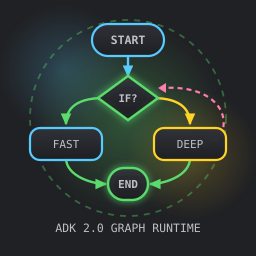
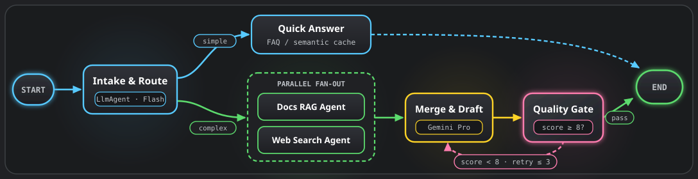
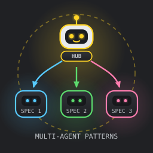
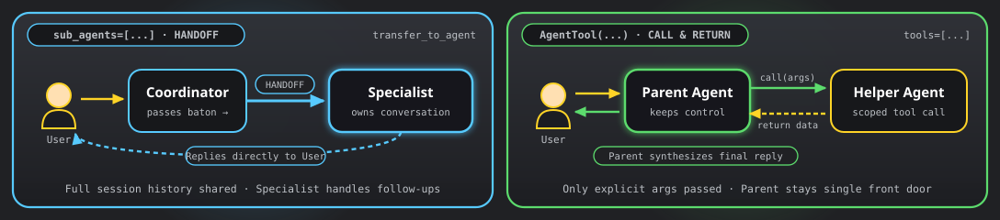
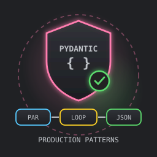
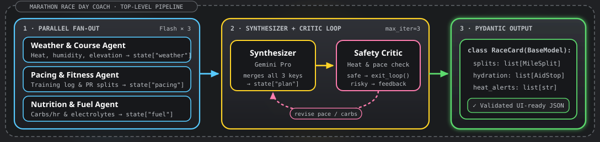
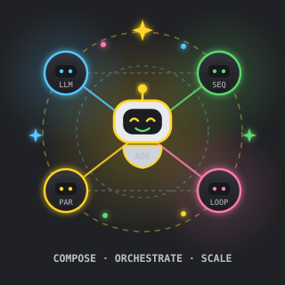

ADK
ADK Workflows
Workflows Gemini
Gemini
 Google Developer GroupBangkok · DevFest 2026
Google Developer GroupBangkok · DevFest 2026
Agenda
- 01Agent building blocksLlmAgent, Sequential, Parallel, Loop & Custom
- 02ADK 2.0 Graph RuntimeNodes, edges, conditional routing & Visual Builder
- 03Multi-agent patternsDelegation, AgentTool, Critic loops & state
- 04Production patternsReal-world architecture, Pydantic & best practices

Agent
building blocks
Why one mega-agent fails, and
the 3 core agent types in ADK
Why one mega-agent breaks down at scale
Context & tool bloat
20+ tools & a 4-page prompt confuse the model — it picks wrong tools or skips rules.
Unpredictable order
LLMs are probabilistic. Asking one prompt to "always verify first" still skips steps.
Slow & expensive
One heavy model runs every step serially instead of fast, parallel specialists.

Three agent types cover every workflow
1 · LlmAgent
Powered by Gemini. Dynamic reasoning, tool calling, and LLM-driven delegation.
2 · Workflow Agents
No LLM for control flow. Fixed, predictable orchestration over child agents.

3 · Custom BaseAgent
Subclass BaseAgent and override _run_async_impl for arbitrary Python logic.

SequentialAgent: run in order, pass data via state
from google.adk.agents import LlmAgent, SequentialAgent
researcher = LlmAgent(
name="researcher", model="gemini-2.5-flash",
instruction="Gather 5 key facts on the topic.",
output_key="notes",
)
writer = LlmAgent(
name="writer", model="gemini-2.5-pro",
instruction="Write a short blog post from:\n{notes}",
output_key="draft",
)
blog_pipeline = SequentialAgent(
name="blog_pipeline",
sub_agents=[researcher, writer, editor],
)
Guaranteed order
Sub-agents execute strictly left-to-right. Zero chance of skipping a step.output_key
ADK saves the agent's final response straight into session.state["notes"].{template_var}
Downstream agents read state automatically inside their instruction string.ParallelAgent: fan-out concurrently, then fan-in
from google.adk.agents import ParallelAgent, SequentialAgent
gather_info = ParallelAgent(
name="gather_info",
sub_agents=[weather_agent, flights_agent, hotels_agent],
)
trip_planner = SequentialAgent(
name="trip_planner",
sub_agents=[gather_info, synthesizer], # fan-out → fan-in
)
Cut latency
Independent branches run concurrently; total time equals the slowest branch.Use distinct keys
Each branch must write to its ownoutput_key to avoid overwriting siblings.Pair with Sequential
WrapParallelAgent + synthesizer inside a SequentialAgent for clean fan-in.LoopAgent: iterate until quality passes
from google.adk.agents import LoopAgent
from google.adk.tools.tool_context import ToolContext
def exit_loop(tool_context: ToolContext) -> dict:
"""Call when the draft meets all criteria."""
tool_context.actions.escalate = True
return {"status": "approved"}
refine_loop = LoopAgent(
name="refine_loop",
sub_agents=[draft_writer, quality_critic],
max_iterations=4,
)
Early exit
Any tool or agent settingactions.escalate = True breaks out of the loop cleanly.Shared memory
Each turn reads the previous{draft} and {feedback} from state.Hard ceiling
max_iterations stops runaway retries and caps your token budget.max_iterations on every LoopAgent — never rely solely on an LLM to decide when to stop.
ADK 2.0
Graph Runtime
Nodes, edges, conditional routing
and the Visual Builder
From tree hierarchy to Graph Workflow Runtime
ADK 1.x · Tree Hierarchy
Nested Sequential, Parallel, and Loop trees.
Simple to start, but arbitrary jumps, multi-way branches, or back-edges require custom BaseAgent code.
ADK 2.0 · Graph Workflow Runtime
First-class Nodes, Edges, conditions, and cycles.
Declarative routing, parallel joins, retry loops, and pause/resume — still 100% compatible with LlmAgent.
Nodes, edges & conditional routing
from google.adk.workflows import Workflow, END
def route_ticket(state: dict) -> str:
return "billing" if state.get("intent") == "billing" else "tech"
def quality_gate(state: dict) -> str:
return END if state.get("score", 0) >= 8 else "draft"
support_graph = Workflow(
name="support_graph",
nodes=[triage, billing, tech, draft, review],
edges=[
("triage", route_ticket), # conditional edge
("billing", "draft"),
("tech", "draft"),
("draft", "review"),
("review", quality_gate), # loop back or END
],
)
Nodes
AnyLlmAgent, workflow agent, tool, or plain Python function can be a graph node.Static edges
Wire("billing", "draft") to guarantee deterministic handoffs between stages.Conditional edges
A lightweight Python router inspectsstate and returns the next node name or END.Branching, parallel fan-out & quality loop in one graph

Structured workflows vs Collaborative agent teams
Structured / Graph Workflows
Explicit paths defined by code, graphs, or Sequential / Parallel / Loop agents.
Best for: SOPs, compliance checks, data pipelines, support triage, document review.
Collaborative / Autonomous Teams
LLM coordinators and peer agents dynamically decide who acts next via handoffs.
Best for: Deep research, exploratory coding, ambiguous multi-turn user requests.
Keep routing & guardrails deterministic; let Gemini reason freely inside each specialized node.
Visual Builder in adk web
AI Assistant
State Inspector
score: 9 · passed: true
Visual node editor
Inspect and edit agents, tools, callbacks, and workflow edges on an interactive canvas.AI Builder Assistant
Describe new nodes or routing changes in plain English — the assistant edits the workflow for you.Live trace & state diff
Test prompts immediately and step through every event, tool call, andstate_delta.
Multi-agent
patterns
Coordinator, AgentTool, Critic loops,
hierarchies and shared state
Coordinator / Dispatcher: LLM-driven routing
billing_agent = LlmAgent(
name="billing_agent", model="gemini-2.5-flash",
description="Handles invoices, charges, and refunds.",
instruction="Resolve customer billing questions.",
)
coordinator = LlmAgent(
name="support_desk", model="gemini-2.5-flash",
instruction="Route each request to the right specialist.",
sub_agents=[billing_agent, tech_agent, returns_agent],
)
Auto-flow handoff
ADK injectstransfer_to_agent automatically when sub_agents are registered.description is the router
Write crisp, non-overlapping descriptions — the coordinator reads them to pick who runs.Specialist owns the turn
Once transferred, the sub-agent replies directly to the user and holds follow-up context.sub_agents vs AgentTool: when to use which?

| Dimension | sub_agents=[...] (Transfer) | tools=[AgentTool(...)] (Call) |
|---|---|---|
| Control flow | Transfers conversation control to child | Calls child like a function; parent keeps control |
| Context shared | Full session history visible to child | Only explicit prompt / args passed in |
| Who replies | Specialist responds directly to user | Child returns result; parent synthesizes reply |
| Best for | Department handoffs, support triage | Summarizer, SQL writer, search specialist |
sub_agents when the specialist should talk to the user; use AgentTool when the parent must stay in charge.Generator–Critic refinement loop
generator = LlmAgent(
name="generator", model="gemini-2.5-flash",
instruction="Draft SQL. Fix issues in: {feedback?}",
output_key="draft",
)
critic = LlmAgent(
name="critic", model="gemini-2.5-pro",
instruction="Check {draft} for safety & accuracy. "
"Call approve() if valid, else explain fixes.",
tools=[approve], # sets actions.escalate = True
output_key="feedback",
)
review_loop = LoopAgent(
name="sql_refiner", sub_agents=[generator, critic],
max_iterations=3,
)
Split personas
Models catch far more bugs when critiquing someone else's draft in a fresh role.Mix model tiers
Draft fast with Flash, verify strictly with Pro — high quality at lower cost.Optional {feedback?}
The ? prevents a KeyError on iteration 1 before any feedback exists.Hierarchical task decomposition
Shared State: the contract between agents
# 1. Producer writes via output_key
profiler = LlmAgent(
name="profiler", model="gemini-2.5-flash",
output_key="runner_profile",
)
# 2. Tool writes scoped keys directly
def save_pace(pace: str, tool_context: ToolContext):
tool_context.state["temp:target_pace"] = pace
tool_context.state["user:preferred_units"] = "km"
return {"saved": True}
# 3. Consumer reads with {key} or optional {key?}
coach = LlmAgent(
name="coach", model="gemini-2.5-pro",
instruction="Build plan for {runner_profile} "
"using units: {user:preferred_units?}",
)
Automatic handoff
output_key stores the final text or JSON into session.state with zero glue code.Safe templates
Use{key} for required inputs and {key?} for optional keys that may be unset.Scope prefixes
temp: turn only · user: across sessions · app: global · none = current session.
Production
patterns
Real-world architecture, Pydantic
schemas and best practices
Case study: Marathon Race Day Coach (multi-agent)

3× faster intake — Weather, pacing & fuel run concurrently in Stage 1.Safe by construction — Critic rejects aggressive pacing in high humidity.UI-ready JSON — Validated Pydantic card ready for web/mobile apps.SequentialAgent or ADK 2.0 Workflow graph.Structured outputs with Pydantic output_schema
from pydantic import BaseModel, Field
from google.adk.agents import LlmAgent
class ReviewVerdict(BaseModel):
score: int = Field(ge=1, le=10)
passed: bool
feedback: list[str]
judge_agent = LlmAgent(
name="judge_agent",
model="gemini-2.5-flash",
instruction="Evaluate {plan} against safety rules.",
output_schema=ReviewVerdict,
output_key="verdict",
)
Guaranteed JSON
Gemini enforces the Pydantic schema — no brittle regex or markdown stripping.Clean routing
Graph edges check state["verdict"]["passed"] deterministically in Python.Important caveat
Usingoutput_schema disables tools on that agent — split tool calls into an earlier node.output_schema with output_key at stage boundaries so every downstream node gets typed data.Best practices & common pitfalls
- ✓Start simple. Prove one
LlmAgentbefore splitting into a multi-agent graph. - ✓Right-size models. Use Gemini Flash for routing & extraction, Pro for deep synthesis.
- ✓Always cap loops. Set
max_iterationson everyLoopAgentand cycle edge. - ✓
 Trace every run. Inspect event timelines and state diffs in
Trace every run. Inspect event timelines and state diffs in adk webor Cloud Trace.
- !State key collisions. Parallel branches sharing an
output_keyoverwrite each other. - !Overlapping descriptions. Vague
descriptionfields cause misrouting in coordinators. - !Missing
{key?}syntax. Unset state variables raise aKeyErroron first turn. - !
output_schema+tools. Don't mix them on one agent — split into two steps.
Compose, Orchestrate, Scale
1 · Compose
Combine LlmAgent reasoning with deterministic Sequential, Parallel, Loop and custom BaseAgent blocks.
2 · Orchestrate
Model branches & cycles in ADK 2.0 Graph Runtime, choose sub_agents vs AgentTool, and iterate in adk web.

3 · Scale
Enforce shared state contracts, Pydantic output_schema, bounded loops, and deploy to Cloud Run or Vertex AI.
 Cloud Run
Cloud Run
adk web, split one overloaded prompt into a 2-step SequentialAgent, and inspect the state flow.Read more and build it yourself
Agents overview
adk.dev/agents/Workflow agents
adk.dev/agents/workflow-agents/Multi-agent systems
adk.dev/agents/multi-agents/ADK 2.0 Orchestration Codelab
codelabs.developers.google.comMulti-Agent Systems Codelab
Build Multi-Agent Systems with ADKADK Python SDK & samples
github.com/google/adk-pythonThank you
Q & A
Punsiri Boonyakiat
Google Developer Expert in Cloud AI
